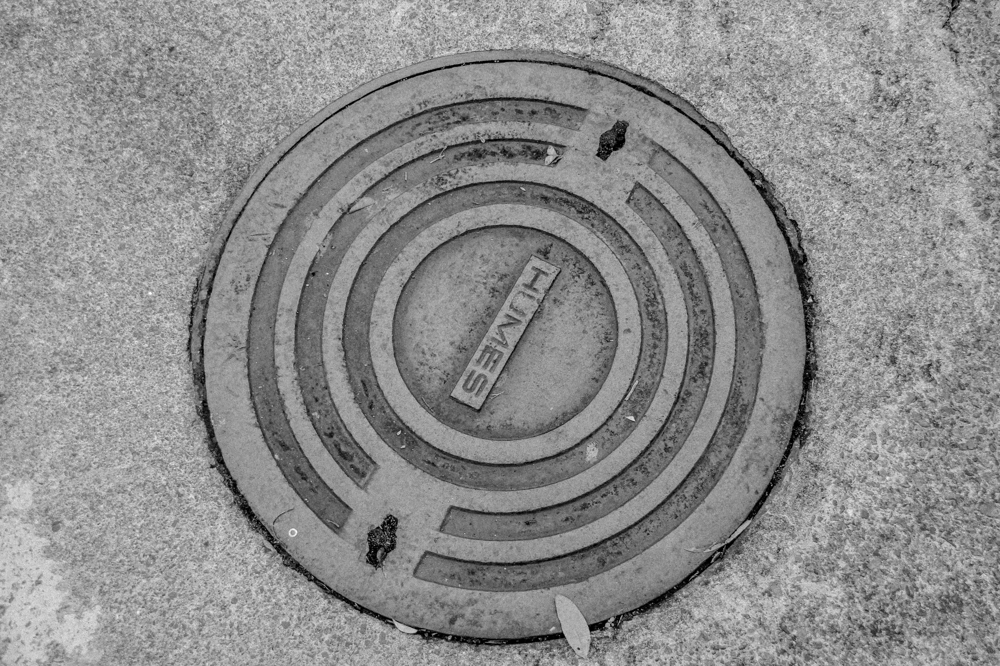
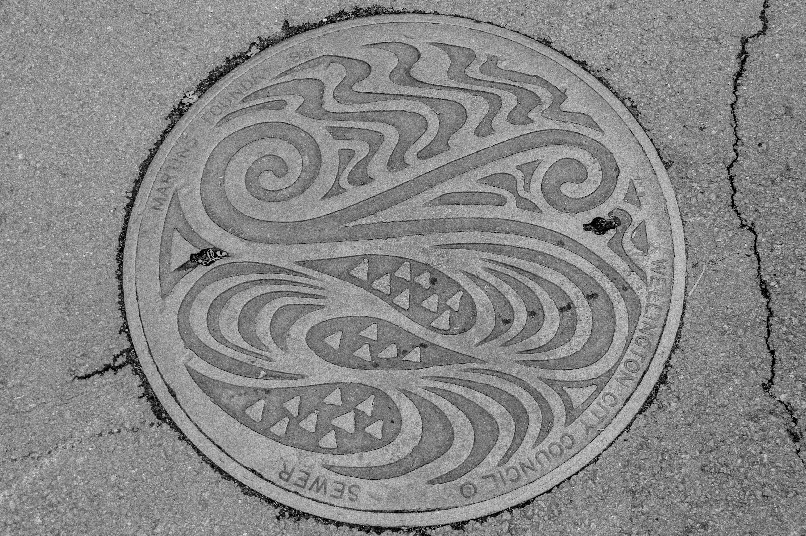

Wellington City Council
For more read at:Wellington City Council Site

Lowes Foundry Manhole

Sewer by Bakunetsu Kaito from:The Noun Project
For more read at:Humes Site
For more read at:Wellington City Council Site